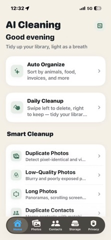

Privacy-first photo cleanup
Private iPhone photo cleaning. No uploads.
AI Cleaning reviews duplicates and sorts photos into nine categories on your iPhone. Its App Store privacy label says Data Not Collected.

Current privacy evidence
Five disclosures to check before granting photo access.
These are claims and labels shown on the current US App Store listing, not an independent security audit.
Why privacy matters
Your photo library includes more than casual pictures.
Users often keep receipts, invoices, ID cards, family moments, private travel photos, and work documents in the same library. A private AI photo cleaner should make those categories easier to review without turning organization into a cloud-upload requirement.
Documents, receipts, invoices, and ID cards need careful review before cleanup.
Family photos, group photos, food, restaurants, animals, and plants are easier to review after classification.
Duplicates, screenshots, blurry shots, low-quality photos, and large media should stay under user control.
Install decision
What to check before using any AI photo cleaner.
Before installing a photo cleaner, look for a clear privacy position, App Store links, support contact, and honest claims. Avoid apps that promise impossible iOS system cleanup or push users directly into bulk deletion.
The app should explain why photo library access is needed and how cleanup decisions are reviewed.
The current App Store listing says every AI computation runs on the iPhone and nothing is uploaded.
Use classification to understand the library, then review cleanup candidates one category at a time.
FAQ
Private AI photo cleaner questions.
What should a private AI photo cleaner do first?
It should classify and explain the library before asking users to delete. AI Cleaning starts with on-device photo classification, then supports cleanup review.
Why does on-device photo analysis matter?
Photo libraries often include private documents, receipts, invoices, ID cards, and family photos. On-device analysis reduces the need to upload sensitive content for basic organization.
Does private cleanup mean automatic deletion?
No. Cleanup should remain reviewable and intentional, especially for similar photos and large media where users may want to keep one best copy.
Does AI Cleaning upload my photos?
The current US App Store listing says every AI computation runs on the iPhone and nothing is uploaded.
Does AI Cleaning collect personal data?
Its current App Store privacy label says Data Not Collected. Apple notes that these privacy practices are indicated by the developer and may vary by feature or age.
Does AI Cleaning need an account or internet connection?
The App Store listing says no login or internet connection is required for core features. Photo Library permission is still required for the app to analyze selected library content.
Is the private AI photo cleaner free?
AI Cleaning is free to download and offers optional monthly and yearly subscriptions for Pro features such as nine-category smart classification.